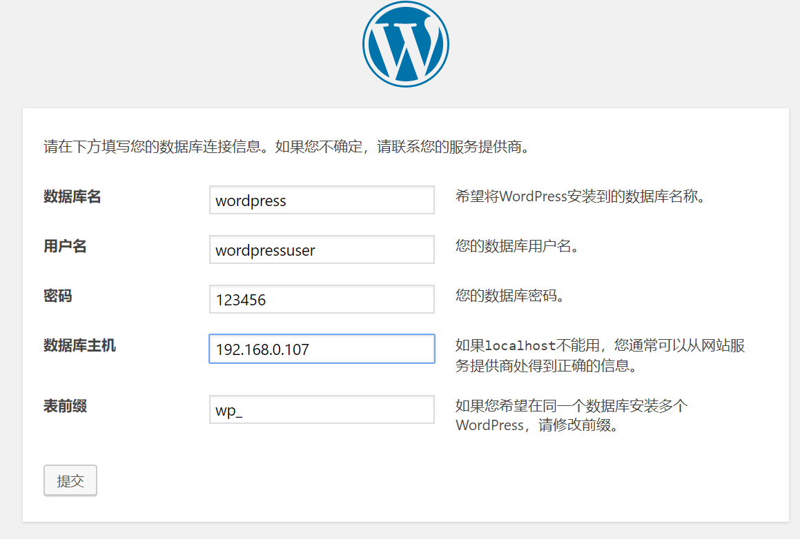

颓废了一个寒假,临末尾来搭一个Discuz+wordpress吧
环境
系统 centos 7
虚拟机 Vmware
Discuz X3.4
数据库
一些linux指令简单介绍
reboot
重启
ll
显示当前目录文件和文件夹
相当于windows下的dir
cd
后面加文件夹名可以跳转到相应的文件夹中
和windows上的cd一样
另外
cd ~
是跳转到一开始的目录
cd ..
是跳转到上一层
vi
vi是linux中自带的记事本,不过相比较windows强了不知道多少倍...
它的GUI版本是熟悉的vim哦~
后面加文件名就可以打开或者创建文件
打开之后,要点一下i键才可以正常的编辑,如果和我版本一样的额话,可以在屏幕左下角看到一个INSERT
如果要保存或者退出,需要先点一下Esc键,这时候左下角的INSERT就会消失
输入
:wq
就代表保存并退出
这个时候你输入的指令都会显示在屏幕的最下面
输入
:q
代表退出
cp
cp指令就是复制啦
它的用法是
cp -参数 你要复制的 你要复制到哪里
现在只用到了一个参数
-r代表递归复制,简单来说就是复制文件夹
windows下使用ssh
右键点击屏幕左下角的windows标志

选择Windows PowerShell
输入
ssh 用户名@ip地址
如果出现让你输yes/no就输yes
然后会让你输入密码
连接完之后你在PowerShell里输入什么,连接的电脑就会做什么了~
安装Vmware
这有啥好说的???
跳过
安装centos系统
这有啥好说的
一定要记好自己的密码,用户名默认是root
每次登录的时候都需要输入账号和密码
 这里主要讲一下配置网络的细节吧
这里主要讲一下配置网络的细节吧
因为可以联网之后,就可以用ssh控制电脑了呢,就不用盯着虚拟机那个小框了呢~
先输入以下
ip addr
如果长成这样
 注意看红线下面没有出现ip地址,这个时候就要手动配置一下网络
注意看红线下面没有出现ip地址,这个时候就要手动配置一下网络
打开虚拟机设置
 调整成桥接模式
调整成桥接模式
 然后回到虚拟机,输入
然后回到虚拟机,输入
cd /etc/sysconfig/network-scripts
再输入
ll
 输入
输入
vi ifcfg-ens33
编辑ifcfg-ens33文件
顺便一提
linux在输入文件名的时候是可以按Tab键自动补全的
如果你玩过minecraft的话会好理解的~
比windows高到不知道哪里去了
把
ONBOOT=no
改成
ONBOOT=yes
保存退出
重启一下虚拟机
再输入一下ip addr
 现在那个红线上面的ip地址就是你的虚拟机ip地址
现在那个红线上面的ip地址就是你的虚拟机ip地址
现在可以用ssh链接你的虚拟机了~~
配置基本的环境
在自己的电脑上安装git
由于这个可能不是太复杂就不展开说了
关防火墙和SELinux
先要把什么防火墙之类的东西全关掉,防火墙什么的最讨厌了呢~
顺便一提,如果你登录的不是root的话,所有指令最好都带一个sudo前缀,保证你有足够的权限
依次输入
systemctl stop firewalld
systemctl disable firewalld
 这样就把防火墙关掉了~
这样就把防火墙关掉了~
但是linux还有个叫SELinux的讨厌的东西
编辑/etc/selinux/config文件
再顺便一提,右键powershell就可以粘贴哦~
把对应的一行改成这个
SELINUX=disabled
保存退出
输入
setenforce 0
在输入
getenforce
如果显示Disabled就已经关掉了
如果不行就重启一下虚拟机吧~
安装Apache
输入
yum -y install httpd
其中它让输yes就输
安装完成后
依次输入
systemctl start httpd
开启http
systemctl enable httpd
设置http开机启动
可以输入
systemctl status httpd
 如果那个running变成了dead,极大的可能是有东西占用了80端口,比如阿里云就会自带nginx占用掉80端口
如果那个running变成了dead,极大的可能是有东西占用了80端口,比如阿里云就会自带nginx占用掉80端口
这个时候,输入
yum install net-tools
中间可能要输入一次y
完成之后输入
netstat -tlnp|grep 80
 看到有程序在占用80端口,从右边可以看到进程号为1372,应用是httpd
看到有程序在占用80端口,从右边可以看到进程号为1372,应用是httpd
这个地方由于我已经成功启动了httpd所以显示的是httpd,如果是什么其他的东西,就需要强行把这个应用停止,把80端口让给httpd
kill -9 进程号
直到80端口不再被占用
这时候
systemctl restart httpd
重启一下httpd
安装Mariadb
输入
yum -y install mariadb-server.x86_64
顺便一提 Mariadb 是类似mysql开源版本的存在
默认的用户名是root
密码是空的
选它主要原因是开源(国内下载的快)
输入
systemctl start mariadb
开启服务
systemctl enable mariadb
设置开机启动
systemctl status mariadb
查看状态
安装php和php-mysql
yum -y install php php-mysql
安装git
yum install git -y
安装Discuz
我们用git把Discuz的文件下载下来
Discuz的项目地址在
https://gitee.com/ComsenzDiscuz/DiscuzX
还好不在github...
 一次点击克隆,复制
一次点击克隆,复制
输入
git clone 你复制到的东西
回到主目录,输入
ll
就能看到一个叫DiscuzX的文件夹,~~当然你有可能看不出它是文件还是文件夹~~
输入
cp -r DiscuzX/upload /var/www/html/upload
把DiscuzX下的upload文件夹复制到那个奇怪的目录下
那个目录下的东西会被Apache(httpd)给解析成我们熟悉的网页
现在需要给DiscuzX一点权限
依次输入
chmod -Rf 777 /var/www/html/
chmod -Rf 777 /var/www/html/upload
打开浏览器,输入
虚拟机的ip地址/upload
 点我同意
点我同意
 点下一步*2
点下一步*2
 数据库密码调成空(如果你没有手动调整数据库密码的话)
数据库密码调成空(如果你没有手动调整数据库密码的话)
记得填写管理员密码哦~
然后就安完了~
安装wordpress
先要整到wordpress的安装包
最近的官网不大友好...
而且由于centos7默认的php的版本太低了也不能装版本过高的wordpress
所以我选了wordpress-v5.0.2-zh_CN.zip
现在要用ssh把这个zip传到虚拟机上
我把这个zip放在了e盘
我用了git带的scp
在e盘右键点击git bush here
输入
scp wordpress-v5.0.2-zh_CN.zip root@192.168.0.107:wordpress-v5.0.2-zh_CN.zip
在powershell输入ll就能看到传上去的文件了
输入
yum install -y unzip zip
安装unzip
输入
unzip wordpress-v5.0.2-zh_CN.zip
解压这个zip包
输入
cp -r wordpress /var/www/html/wordpress
在浏览器输入
http://ip地址/wordpress
就能看到wordpress的安装界面了~
 先别急着往下,现在我们要配置一下数据库
先别急着往下,现在我们要配置一下数据库
回到powershell
依次输入
mysql -uroot
打开数据库
create database wordpress;
建立要用的数据库
GRANT ALL ON wordpress.* TO 'wordpressuser'@'%' IDENTIFIED BY "123456";
建立该数据库的账户,最后一个双引号换成你要的密码
我这里用的123456
quit
退出数据库
systemctl restart mariadb
重启一下数据库
回到浏览器
 依次填表
数据库主机填虚拟机的IP地址
如果你用的是阿里云之类的东西记得开放3306端口(数据库使用)
如果出现这个界面
 回到powershell
回到powershell
输入
vi /var/www/html/wordpress/wp-config.php
复制网页里的东西
粘贴(记得右键)
退出保存
然后回浏览器,一直往下走就好了~
之后有空再更新如何把wordpress调成多人模式吧~~
参考网址
https://blog.csdn.net/xiehd313/article/details/80814584
https://blog.51cto.com/2382492/2083079
https://www.cnblogs.com/caicaizi/p/9564754.html
https://blog.csdn.net/sky101010ws/article/details/50782475
https://blog.csdn.net/weixin_42591732/article/details/102534262
https://www.cnblogs.com/biaopei/p/11683407.html
https://blog.csdn.net/weixin_42506905/article/details/90339253